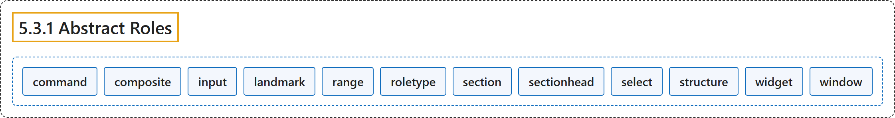

5.3.1 Abstract Roles
Classification

Glossary
| Term | Definition | 中文翻译 | Source |
|---|---|---|---|
| 5.3.1 Abstract Roles 抽象角色 |
"The following roles are used to support the WAI-ARIA Roles Model for the purpose of defining general role concepts." | 下列角色用于支持 WAI-ARIA 角色模型，目的是定义一般的角色概念。 | World Wide Web Consortium, 2023, section 5.3.1 |
| command 命令 |
"A form of widget that performs an action but does not receive input data." | 一种控件，它执行动作但不接收输入数据。 | World Wide Web Consortium, 2023, section 5.4, command |
| composite 复合控件 |
"A widget that may contain navigable descendants or owned children." | 可以包含可导航后代或从属子元素的控件。 | World Wide Web Consortium, 2023, section 5.4, composite |
| input 输入 |
"A generic type of widget that allows user input." | 一种通用控件类型，允许用户输入。 | World Wide Web Consortium, 2023, section 5.4, input |
| landmark 地标 |
"A perceivable section containing content that is relevant to a specific, author-specified purpose and sufficiently important that users will likely want to be able to navigate to the section easily and to have it listed in a summary of the page." | 可感知的一节，其内容与作者指定的特定目的相关且足够重要，用户很可能希望能轻松导航到该节，并让它列在页面摘要中。 | World Wide Web Consortium, 2023, section 5.4, landmark |
| range 范围 |
"An element representing a range of values." | 表示值的范围的元素。 | World Wide Web Consortium, 2023, section 5.4, range |
| roletype 角色类型 |
"The base role from which all other roles inherit." | 所有其他角色都继承自的基础角色。 | World Wide Web Consortium, 2023, section 5.4, roletype |
| section 节 |
"A renderable structural containment unit in a document or application." | 文档或应用中可呈现的结构性容纳单元。 | World Wide Web Consortium, 2023, section 5.4, section |
| sectionhead 节标题 |
"A structure that labels or summarizes the topic of its related section." | 标注或概括相关节的主题的结构。 | World Wide Web Consortium, 2023, section 5.4, sectionhead |
| select 选择 |
"A form widget that allows the user to make selections from a set of choices." | 一种表单控件，允许用户从一组选项中进行选择。 | World Wide Web Consortium, 2023, section 5.4, select |
| structure 结构 |
"A document structural element." | 文档结构元素。 | World Wide Web Consortium, 2023, section 5.4, structure |
| widget 控件 |
"An interactive component of a graphical user interface (GUI)." | 图形用户界面（GUI）的交互式组件。 | World Wide Web Consortium, 2023, section 5.4, widget |
| window 窗口 |
"A browser or application window." | 浏览器或应用窗口。 | World Wide Web Consortium, 2023, section 5.4, window |
References
World Wide Web Consortium. (2023, June 6). Accessible Rich Internet Applications (WAI-ARIA) 1.2 (W3C Recommendation). https://www.w3.org/TR/wai-aria-1.2/